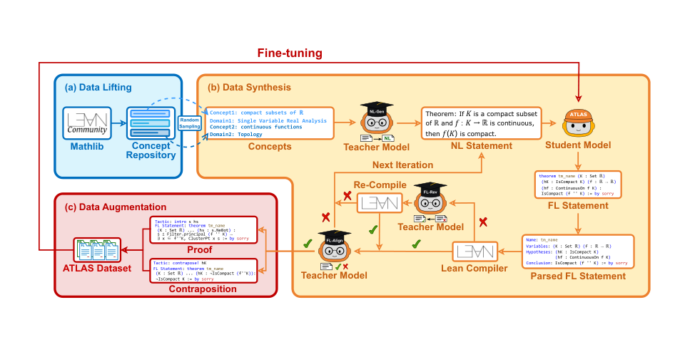
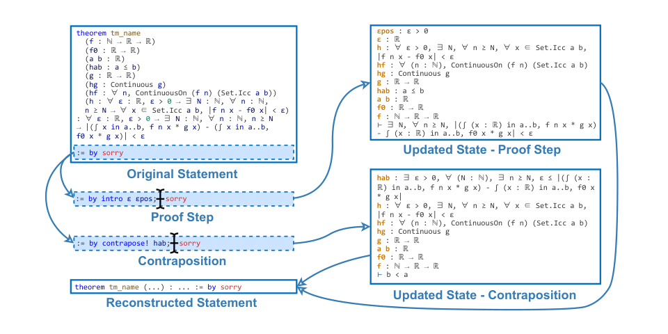

Builds a 117k Lean 4 autoformalization dataset from Mathlib concepts, uses the Lean compiler to validate generated statements, and fine-tunes LLM translators targeting Lean 4.
Abstract
Autoformalization, the automatic translation of mathematical content from natural language into machine-verifiable formal languages, has seen significant progress driven by advances in large language models (LLMs). Nonetheless, a primary barrier to further improvements is the limited availability of parallel corpora that map informal mathematical text to its formal counterpart. To address this limitation, we propose ATLAS (Autoformalizing Theorems through Lifting, Augmentation, and Synthesis of Data), a novel data generation framework designed to produce large-scale, high-quality parallel corpora of theorem statements. Distinct from prior approaches, ATLAS begins with a concept repository, accelerates the improvement of the student model through expert iteration combined with knowledge distillation, and introduces two novel augmentation strategies that exploit the structural characteristics of formal languages. Running the proposed ATLAS framework for 10 iterations, we construct an undergraduate-level dataset of 117k theorem statements and develop the ATLAS Translator by fine-tuning Llama3.1-8B-Instruct with LoRA. This model establishes a new state of the art, demonstrating statistically significant improvements over both the Herald Translator and the Kimina-Autoformalizer across all benchmarks (p<0.05, two-sided t-test). Furthermore, we demonstrate that the full-parameter fine-tuning of a stronger base model on the ATLAS dataset leads to superior performance. The datasets, model, and code are available at https://github.com/XiaoyangLiu-sjtu/ATLAS.
Problem
LLM autoformalization is limited by the scarcity of parallel corpora pairing natural-language theorem statements with formal ones. Extracting statements from Mathlib caps dataset size, while web-scraped sources need heavy pre-processing.
Approach
ATLAS extracts mathematical concepts from Mathlib (data lifting) and uses LLMs to synthesize natural-language statements from them. A teacher model (DeepSeek-V2.5) guides a student model (Llama3.1-8B-Instruct) through expert iteration with knowledge distillation, and the Lean compiler checks syntactic validity. Two augmentations exploit Lean 4 structure: proof-step augmentation using Infoview states, and contraposition augmentation. The process runs for 10 iterations.

Figure 1: The overview of the proposed ATLAS framework.

Figure 3: Demonstration of the proof step and contraposition augmentation methods.
Results
The resulting dataset has 117,145 Lean 4 statements. The ATLAS Translator, fine-tuned with LoRA, outperforms Herald Translator and Kimina-Autoformalizer on ProofNet, PutnamBench and MathQual with statistical significance. Full-parameter fine-tuning of stronger base models gives further gains.